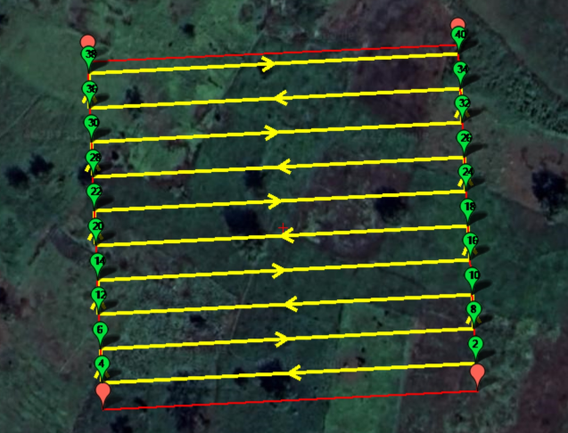
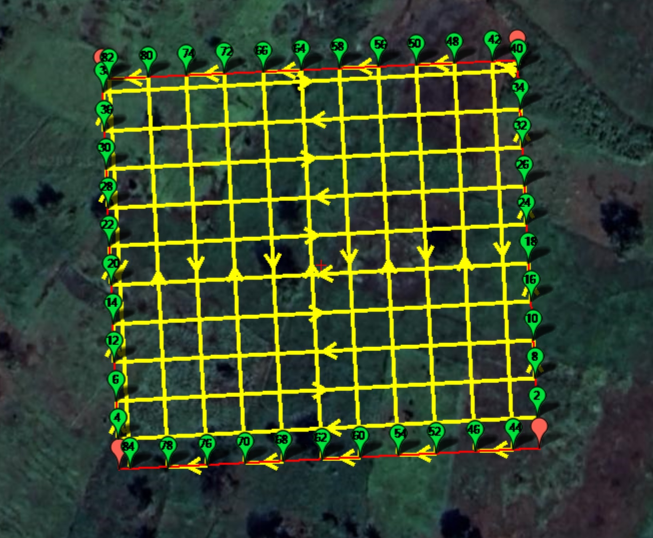
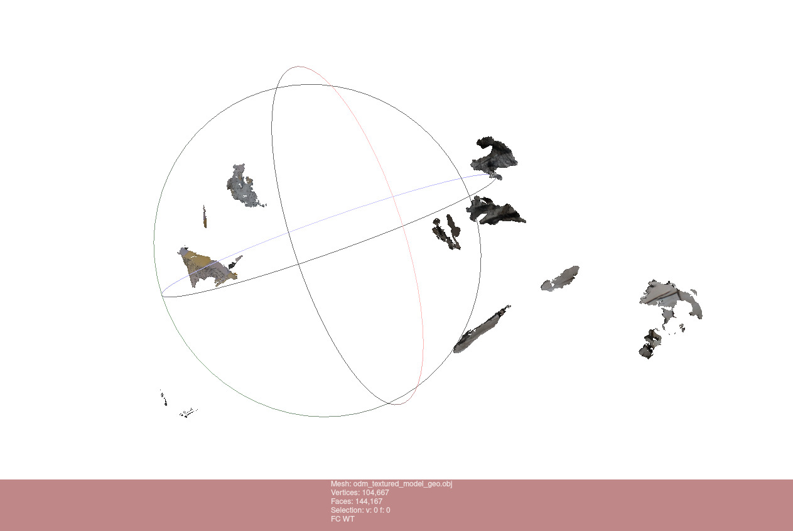
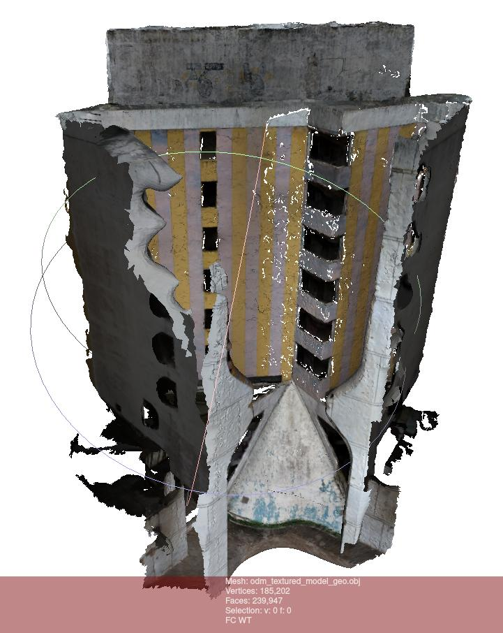
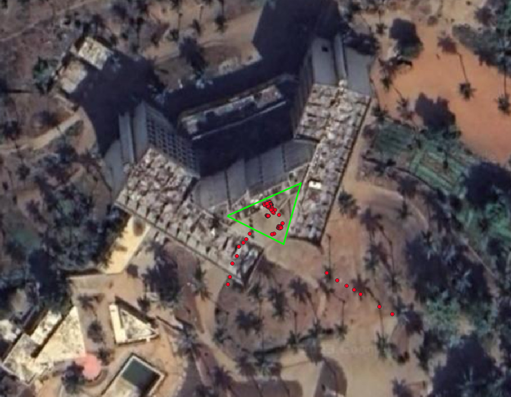
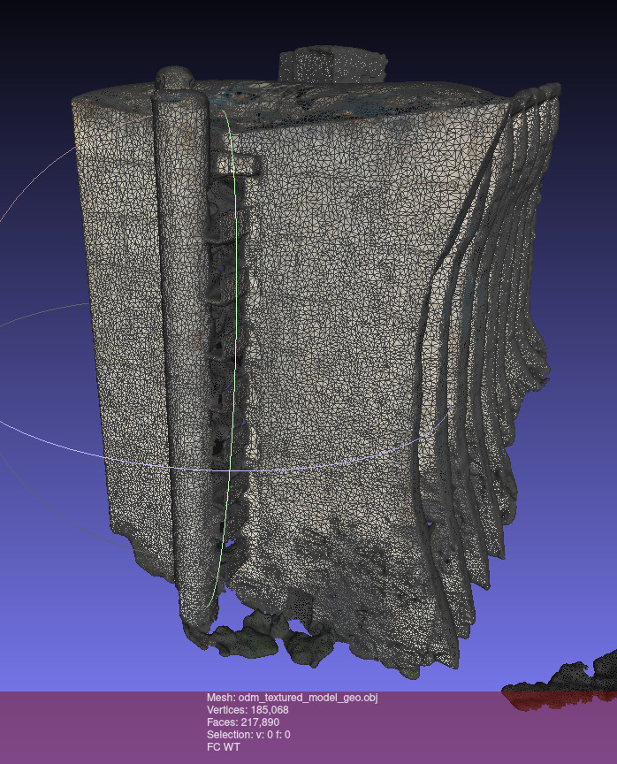
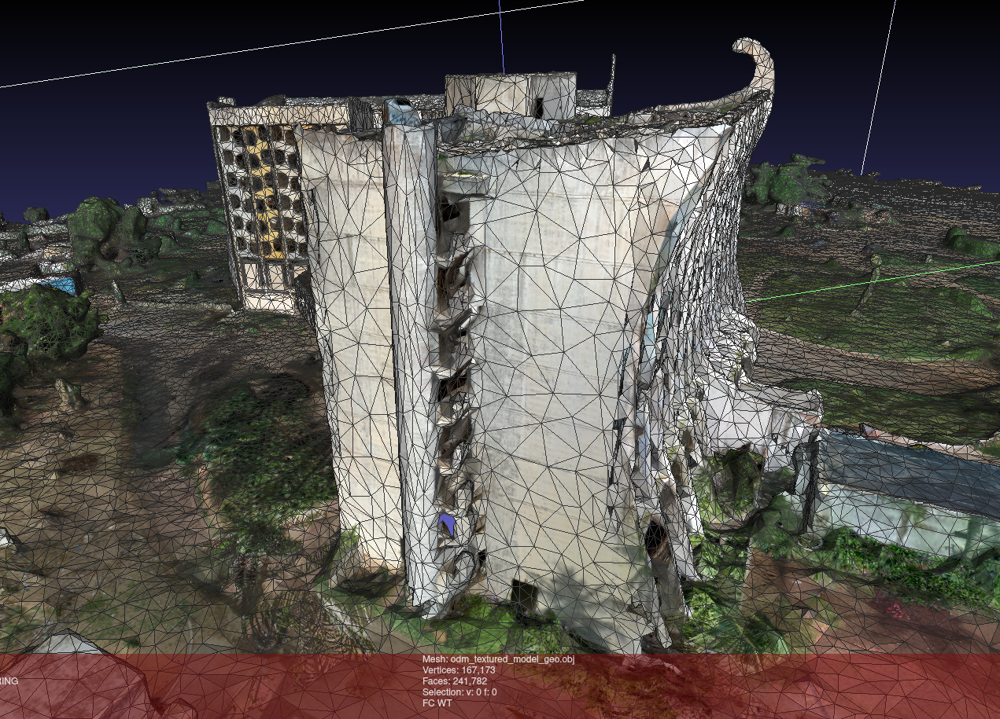
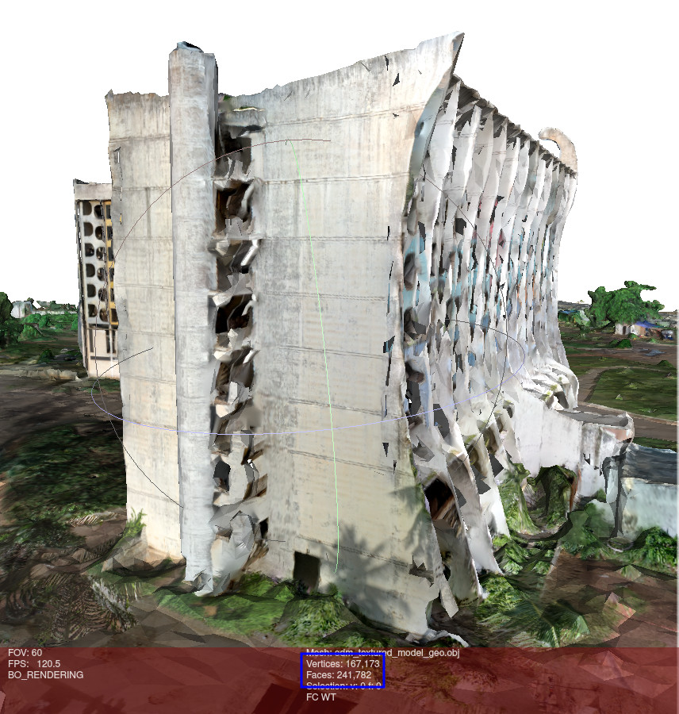

Présentation du projet
- Présentation des résultats et téléchargement du modèle 3D de la cartographie de l'Hôtel de la Paix.
Ce site documente la méthodologie mise en place pour la cartographie 3D de bâtiments par drone. Il a été réalisé dans le cadre d'un projet de sauvegarde de patrimoine au sein de l'entreprise Mitsio Motu.
Cette documentation regroupe :
- Toutes les questions que nous nous sommes posés lors de la mise en place de ce projet de reconstruction 3D ainsi que les réponses sourcées que nous y avons trouvées.
- La méthodologie que nous avons mise en place pour le projet.
🤔 À qui s'adresse cette documentation ?
Elle s'adresse autant aux employés de Mitsio Motu qu'à toute personne intéressée par la cartographie 3D de bâtiments. Bien que spécifique à notre projet, cette documentation est assez générale pour que chacun puisse en tirer des informations utiles.
Les notions présentées dans cette documentation peuvent également être utilisées pour d'autres projets. Par exemple :
- Surveillance des cultures.
- Inspection de toitures.
- Recenser et compter des arbres.
- Rendre compte de l'avancement des travaux de construction.
- ...
Historique du projet
Ce projet a été mis en place en avril 2023 pour participer à la sauvegarde du patrimoine togolais. Cette année, l'Hôtel de la Paix, ancien hôtel phare de Lomé abandonné depuis 20 ans, menaçait d'être détruit. Mitsio Motu a alors décidé de cartographier le bâtiment.

Deux méthodes ont été mises en place :
- Une cartographie classique réalisée par des étudiants en architecture.
- Une cartographie 3D par drone, que nous expliquons ici.
Vous pouvez retrouver les résultats des deux méthodes sur le site du projet.

Mitsio Motu
Cette documentation a été rédigée dans le cadre d'un projet de cartographie 3D au sein de l'entreprise Mitsio Motu. Mitsio Motu est une entreprise de conseil basée en Afrique de l'Ouest. Elle travaille avec des gouvernements, des institutions publiques et des entreprises privées pour établir des stratégies de développement en se basant sur la donnée.
Mitsio Motu réalise régulièrement des collectes de données auprès des populations d'Afrique de l'Ouest. Par exemple, en 2022, ce sont 700 collecteurs qui ont parcouru le Togo pendant 7 mois pour recenser toutes les infrastructures du pays : hôpitaux, écoles, restaurants, points d'eau, ... La donnée collectée permet de proposer des plans de déploiement d'infrastructures (lampadaires par exemple) adaptés aux besoins de la population.

Autorisations
Le vol de drone est soumis à des réglementation nationales voire locales. Avant d'entamer concrètement toute mission, il est indispensable de se renseigner sur la législation.
Il peut être nécessaire de faire des demandes d'autorisation de vols. Il est important de conserver précieusement les papiers relatifs au drone :
- Facture d'achat
- Modèle précis
- Immatriculation (si applicable)
- Papiers import/export par les douanes
- Historique des réparations par le constructeur
Comme l'illustre le schéma ci-dessous, à titre indicatif, il ne faut pas négliger le temps des démarches administratives pour obtenir les autorisation nécessaires (section mission approval) au vol.

Identification des contraintes
Avant toute mission, il est indispensable d'identifier les différentes contraites. Comme cette documentation est rédigée par et pour Mitsio Motu, les contraintes listées ici seront celles propres au matériel de l'entreprise. Pour toute évolution de matériel, il faut re-lister toutes les contraintes pour adapter le projet.
Nous allons lister ici les contraintes suivant trois axes :
- Les contraintes organisationnelles : budget, temps disponible,...
- Les contraintes matérielles : matériel disponible, ses capacités et ses limites.
- Les contraintes du terrain, liées à l'opération: géographie du lieu, météo, accessibilité,...
Contraintes organisationnelles
Lorsque vous vous lancez dans ce projet, commencez par clarifier quelques points concernant l'organisation tels que :
- De combien de temps disposez-vous pour chaque étape ?
- Pouvez-vous accéder au site sans problème ?
- Possédez-vous déjà les autorisations légales pour le vol du ou des drone(s) ?
- Quel budget est disponible pour le projet ?
Contraintes matérielles
Drone
Le drone de Mitsio Motu est le Mavic Air 2. C'est un très bon drone amateur. Il embarque une caméra (photo et vidéo) et une balise GPS/GLONNASS.
Voici les contraintes à prendre en compte avec ce drone :
- 3 batteries de 20 à 25 minutes d'autonomie
- Appareil photo 12MP (3000x4000 px) ou 48MP (6000x8000 px)
- Capteur RGB (pas multispectral)
- Prise d'images en JPG et DNG (format RAW de DJI)
- Pas de planification de vol prévue par le constructeur (contrainte contournée par l'utilisation de Litchi Fly)
- Papiers relatifs au drone et à son import au Togo égarés
- Stockage de 8Go embarqué sur le drone + une carde micro SD de 128Go
Ordinateur
La phase de reconstruction d'un modèle 3D demande de la puissance de calcul. Le tableau ci-dessous est extrait de la documentation d'ODM (logiciel que nous utilisons pour la reconstruction) et présente les recommendations de hardware en fonction du nombre d'images.
| Number of images | RAM of RAM + Swap |
|---|---|
| 40 | 4 |
| 250 | 16 |
| 500 | 32 |
| 1500 | 64 |
| 2500 | 128 |
| 3500 | 192 |
| 5000 | 256 |
Le projet de l'Hôtel de la Paix requiert par exemble environ 2500 images. Aucun ordinateur de l'entreprise n'a 128Go de RAM. Plusieurs solutions sont possibles pour contourner ce problème :
- Reconstruire le bâtiment par section et faire du recalage ensuite
- Allouer un très grand swap et traiter la totalité en une seule fois
Nous approfondirons ces points dans la section Reconstruction.
Contraintes du terrain
Géographie du lieu
Avant de faire l'acquisition, il est très important de se rendre sur le lieu, surtout si les vols vont se faire de manière automatisée. Cela permet de se rendre compte de potentiels problèmes lors de l'acquisition. Si possible, il faut faire cette reconnaissance avec le drone pour prendre quelques mesures.
Par exemple, lors du projet de l'Hôtel de la Paix, se rendre sur le terrain en avance a permis de :
- Prendre des mesures de hauteur des différents toits pour programmer ensuite les altitudes de vol du drone
- Repérer des zones problématiques où les vols devront être effectués manuellement
- Repérer les couloirs de vols qui évitent les palmiers 🌴
- Faire des tests de filtres polarisants avec la caméra du drone et la couleur du bâtiment
- Découper le bâtiment en sections à acquérir
Infrastructures
Des questions utiles doivent être posées :
- Y a-t-il de l'électricité sur le lieu ? Pour le rechargement des batteries du drone le jour J.
- Y a-t-il un endroit pratique pour travailler sur ordinateur ? Pour modifier les plans de vol en direct si besoin.
- Le lieu est-il fréquenté ? Si oui, quelles sont les meilleures horaires pour éviter d'être dérangé ?
Planification de la mission
Le drone Mavic Air 2 de DJI est normalement destiné à un usage personnel et non professionnel. Il n'inclut pas la possibilité de prévoir des vols autonomes et doit normalement être piloté à la main par l'opérateur. Cependant, il est possible de contourner cela grâce à l'utilisation de différents logiciels que nous allons présenter ici.
Les étapes à suivre pour mettre en place le vol autonome sont les suivantes :
- Prévoir des points GPS à rallier grâce à Mission Planner ou Litchi Fly.
- Convertir les points dans le format de Litchi Fly et éditer la mission (verticalité par exemple) grâce à Carto3D.
- Vérifier les paramètres généraux de la mission sur Litchi Fly.
Plus précisément, voici le diagramme complet représentant la file de traitement pour la préparation des missions. Cela permet également de clarifier la place et l'utilité de chaque logiciel dans la file de traitement.
Quels sont les vols à prévoir ?
Pour cartographier un bâtiment de cette taille, il est presque indispensable de planifier les vols pour plusieurs raisons :
- C'est très fastidieux à la main et une bonne maîtrise de pilotage de drones est nécessaire.
- Les images doivent être prises d'une manière très précise (elles doivent avoir un certain pourcentage de recouvrement). Planifier le vol permet que les images soient bien prises. À la main, les erreurs sont trop faciles à faire. Les erreurs d'acquisition entravent grandement la qualité de la reconstruction (voire la rendent impossible). Cependant, nous verrons que dans certains cas, les vols ne peuvent s'effectuer qu'à la main.
- Un vol planifié sera souvent plus rapidement effectué sur le terrain qu'à la main. Cela permet donc d'économiser de la batterie.
⚠️ Cependant, il n'est pas possible de planifier une seule très grande mission pour tout le bâtiment. Du moins, les logiciels que nous utilisons ne le permettent pas. Il faut découper le tout en plusieurs morceaux. Voyons donc maintenant comment sectionner cette mission pour la planifier. Les paramètres conseillés ne sont pas obligatoires. N'hésitez pas à les adapter si vous pensez que c'est nécessaire.
Nous allons ici considérer qu'il s'agit de la cartographie d'un grand bâtiment, comme c'était le cas pour l'Hôtel de la Paix. C'est une configuration complexe (par sa grande taille et sa forme biscornue) qui permettra d'aborder de nombreux points.
À vous ensuite d'adapter ces informations à votre projet ! 😉
📚 Quelques termes et notions avant de commencer !
- Vol horizontal : Vol dont le plan est parallèle au sol. Permet d'acquérir le sol par exemple.
- Vol vertical : Vol dont le plan est perpendiculaire au sol. Permet d'acquérir les façades par exemple.
- Caméra à :
- 0° : Elle pointe vers le sol.
- 90° : Elle est perpendiculaire au sol. Elle pointe vers un mur par exemple.
Le sol
- Vol horizontal
- Plat : caméra à 0° et grille simple
- Relief (ou bâtiment) : caméra à 45° et grille croisée
- Altitude en fonction de la précision voulue et de la taille du terrain (et donc longueur de la mission et nombre de photos).
- À planifier sur Mission Planner (voir la partie Grille de survol avec Mission Planner)
Pour acquérir du sol en particulier. En fonction de la précision voulue, le vol peut être assez bas mais peut monter jusqu'à l'altitude maximale du drone.
La façon la plus simple d'opérer est de planifier une grille simple. Cependant si des bâtiments sont présents sur le terrain et que vous ne voulez pas perdre les façades, vous pouvez faire une acquisition en grille croisée avec la caméra orientée à 45%. Attention, celle-ci sera beaucoup plus longue et lourde en stockage et traitement.
Le toit
- Vol horizontal.
- Plat : caméra à 0° et grille simple
- Relief : caméra à 45° et grille croisée
- Altitude à +/- 15m du toit environ en fonction de la précision voulue.
- À planifier sur Mission Planner (voir la partie Grille de survol avec Mission Planner).
Dans la majorité des cas, un vol en grille simple avec la caméra à 0° suffira. Attention, l'altitude de vol donnée ici est relative au toit et non pas au sol. Il faudra trouver un moyen de connaître la hauteur maximale du bâtiment cartographié. Vous pouvez estimer sa hauteur grâce à son nombre d'étages ou bien faire un prévol avec le drone pour aller relever les altitudes de la toiture. Pour cela, placez la caméra du drone à 90° et faite le voler jusqu'à ce que le niveau que vous souhaitez mesurer soit au centre de l'image. L'altitude du drone, à ce moment, correspond à la hauteur du toit.
Vous pouvez ensuite créer un plan avec les hauteurs de votre bâtiment comme celui-ci par exemple :
Les façades
- Vol vertical.
- Caméra à 90°.
- Grille simple.
- Distance de +/- 15m du mur environ en fonction de la précision voulue et des obstacles.
- À planifier sur Mission Planner (voir la partie Grille de survol avec Mission Planner).
Pour chaque façade, il faudra faire une mission différente car la file de traitement prend (pour l'instant) seulement les missions sur une même ligne.
Les angles
- Vol vertical.
- Caméra à 90°.
- Grille simple.
- Distance de +/- 15m du mur environ en fonction de la précision voulue et des obstacles.
- À planifier sur Litchi Fly (voir la partie Grille pour les angles avec Litchi Fly) ou à faire en manuel.
L'acquisition des angles est primordiale pour que le logiciel de reconstruction comprenne le lien entre les façades et puisse tout reconstruire lui même. Il faut que les photos de ces missions couvrent un peu de chaque façade.
(voir la partie Grille pour les angles avec Litchi Fly)
Zone générale
- Vol horizontal.
- Plat : caméra à 0° et grille simple
- Relief (bâtiments) : caméra à 45° et grille croisée
- Altitude de +/- 40m environ en fonction de la précision voulue et de la taille du terrain (et donc longueur de la mission et nombre de photos).
- À planifier sur Mission Planner (voir la partie Grille de survol avec Mission Planner).
Bien que les caractéristiques soient très similaires avec l'acquisition du sol, ce sont deux choses très différentes. Par exemple, pour l'acquisition de l'Hôtel de la Paix, nous avons fait :
- Une acquisition générale de la zone à 40 et 50 m d'altitude en grille croisée (voir polygone bleu dans l'image ci-dessous) incluant le bâtiment principal et un peu de terrain. Cela permet d'obtenir de l'information générale sur le terrain et d'augmenter la qualité de la reconstruction. De plus, cela permet d'avoir des information (même si moyennement précises) sur tout le bâtiment et donc de s'assurer que le logiciel de reconstruction pourra faire le lien entre les différentes zones du bâtiment.
- Une acquisition de type sol sur la zone autour de la piscine. À plus basse altitude, elle permet de se focaliser sur une zone qui nous intéresse et d'avoir une meilleure résolution dans une zone spécifique. Certains petits bâtiments étaient présents dans cette zone. Nous avons fait l'erreur de faire malgré tout une acquisition en grille simple et non croisée. Il nous manque donc un peu des façades de ces bâtiments.
Zones délicates
Certaines zones, trop étroites par exemple doivent être acquises de manière manuelle. À vous de juger les zones pour lesquelles c'est nécessaire. Attention, l'opérateur du drone doit bien respecter les recouvrements entre les images.
Organisation de la planification
Suivi
Ainsi découpé, un seul bâtiment comporte rapidement plusieurs dizaines de missions planifiées différentes. Par exemple pour l'hôtel de la paix, nous avions découpé l'acquisition en 25 mission. De plus, comme nous utilisions 3 drones différents, nous avons planifié toutes les missions pour tous les drones ce qui faisait au total 75 missions.
À ce stade, il est indispensable de prévoir un outil pour suivre l'état de la planification. Nous avions par exemple utilisé un Google Sheet.
Nomenclature
Il va également falloir manipuler de nombreux fichiers :
- Les fichiers .waypoints de Mission Planner
- Les fichiers .csv de Carto3D
- Les fichiers .csv de Litchi Fly
Pour s'y retrouver et facilement comprendre à quoi correspond chaque fichier, il faut mettre en place une nomenclature. Voici par exemple ce que nous avions créé pour le projet Hôtel de la Paix :

En plus de cette nomenclature, nous ajoutions :
- en préfixe le modèle du drone pour lequel la mission était destinée
- Mavic Air 2 :
ma - Mavic 2 Pro :
mp - Phantom Pro v4 :
pp
- Mavic Air 2 :
- en suffixe la distance à la surface de la mission (en m)
Ainsi, une mission du Mavic Air 2 à 8m du pan de mur en rose clair dans l'angle haut droit de l'image s'appellerait : ma_edge_back_right_8.
✍️ C'est une pratique rendant le travail et la collaboration beaucoup plus faciles. Il est également indispensable de documenter la nomenclature choisie pour que le travail soit repris facilement par quelqu'un d'autre ou bien beaucoup plus tard.
Grille de survol avec Mission Planner
Tutoriel écrit avec la version 1.3.8479.20539 de Mission Planner
Réaliser un vol d'acquisition est long et fastidieux. De plus, les images de la zone acquise doivent être prises avec un recouvrement spécifique. Utiliser un logiciel qui planifie les missions permet de s'assurer que la prise d'images sera bonne et permet que l'opérateur drone réalise la mission plus facilement. Pour faire cela, nous utilisons Mission Planner. C'est un logiciel gratuit et Open Source qui permet de prévoir des vols autonomes sous forme de grilles.
Nous appellerons "mission horizontale" un vol sur un plan parallèle au sol (par exemple pour cartographier un parc) et "mission verticale" un vol sur un plan perpendiculaire au sol (par exemple pour cartographier une façade de bâtiment).
🚨 Soyez prévenu, Mission Planner est un logiciel qui présente de nombreux bugs. Il est possible qu'avec de nouvelles mises à jour, certains soient résolus et que d'autres apparaissent. Nous allons essayer de vous guider au mieux dans le logiciel.
Installation
Commencez par installer Mission Planner en suivant les instructions de la documentation.
Ouverture de Mission Planner et Home
En ouvrant Mission Planner, vous arriverez sur un écran similaire. Rendez-vous dans la section PLAN, accessible par le bouton encadré en bleu.
Placez le point de départ et d'arrivée (Home) :
- Soit à la main :
Clic droit>Set home here - Soit avec les coordonnées GPS : en bas du panneau de droite (voir photo ci-dessous)
L'idéal est de placer ce point vers la zone de la mission mais sa position n'a pas de véritable importance car il ne sera en fait pas utilisé dans nos missions. Le placer permet cependant de travailler plus facilement avec Mission Planner qui veut qu'un point Home soit défini.
Mission horizontale
Créez un polygon représentant la zone que le drone doit couvrir. Clic droit > Polygon > Draw a Polygon (ou Load Polygon pour importer un fichier).
Voici à quoi devrait ressembler votre interface une fois le polygone dessiné :
Il faut ensuite générer le parcours. Pour cela, utilisez la fonction de quadrillage (ou Survey (Grid)). Clic droit > Auto WP > Survey (Grid)
Une nouvelle fenêtre apparaît. Elle va permettre de paramétrer le quadrillage pour la grille de survol.
-
Commencez par activer les options avancées. Dans le panneau de droite :
Simple>Display>Advanced Options -
Vérifiez si le modèle du drone (et donc les paramètres de sa caméra) est connu de Mission Planner. Si c'est le cas sélectionnez le modèle du drone. Si ce n'est pas le cas nous déterminerons les paramètres de la caméra dans les étapes suivantes, la première fois uniquement.
Dans le panneau de droite :
Simple>Simple Options>Camera -
Rendez-vous dans le menu des paramètres de la caméra. Dans le panneau de droite :
Camera Config
Les étapes 1 et 2 sont nécessaires seulement si le modèle du drone n'est pas connu de Mission Planner et la première fois uniquement.
-
Importez une image capturée par le drone. Cela va permettre à Mission Planner de déterminer automatiquement les paramètres focal length, image width (pxl) et image height (pxl). ⚠️ Les deux paramètres restants (taille du sensor) ne peuvent pas être déterminés par Mission Planner (bien que les champs soient remplis, ce sont les paramètre de la caméra qui était enregistrée par défaut. Il ne sont pas mis à jour). Il faudra vous renseigner sur la nature de votre capteur pour remplir ces champs vous même.
Dans le panneau de droite :
Camera Config>Camera Options>Load Sample PhotoCi-dessous, le tableau regroupant tous les paramètres des caméras des drones déjà utilisés chez Mitsio Motu. Merci de mettre à jour ce tableau à chaque nouveau modèle utilisé.
| Mavic Air 2 | Mavic Pro 2 | Phantom 4 | |
|---|---|---|---|
| Focal length | 4.5 | 10.3 | 8.8 |
| Image width (px) | 4000 | 5472 | 5472 |
| Image height (px) | 3000 | 3648 | 3648 |
| Sensor width( mm) | 6.4 | 13.31 | 13.31 |
| Sensor height (mm) | 4.8 | 8.88 | 8.88 |
| Proportion | 4/3 | 3/1 | 3/1 |
-
Vérifiez que les paramètres sont cohérents puis sauvegardez les. Mission Planner va vous demander de renseigner le modèle du drone (autrement dit, son nom). Cela permettra à Mission Planner de l'enregistrer et de vous le proposer dans les drones connus lors de votre prochaine planification.
Dans le panneau de droite :
Camera Config>Camera Options>Save -
Sélectionnez le mode de capture d'images
DO_DIGICAM_CONTROL. Ce mode permet de préciser combien de temps le drone doit s'arrêter au moment de prendre la photo (afin de s'assurer que l'image soit nette).Dans le panneau de droite :
Camera Config>Trigger Method>DO_DIGICAM_CONTROL

Vous pouvez maintenant renseigner l'ensemble de vos paramètres de vol dans le menu Grid Options.
Il faut notamment faire attention à :
Camera Options>OverlapetSidelap, les recouvrements de vos images dans le sens de vol et sur les côtés.1Camera Options>Cross Grid, qui peut être très utile dans l'acquisition de zones générales avec des bâtiments.2Copter Options>Delay at WP (sec), le temps d'arrêt à chaque point. Il n'est pas nécessaire d'y régler le temps, nous le paramétrerons dans la section Conversion du format avec Carto3D.
Enfin, retournez dans le menu Simple pour activer 3 options :
Simple Options>Camera top facing forward: Quand elle est activée, cela signifie que la caméra pointe bien vers l'avant du drone. C'est nécessaire pour le calcul de la positions des waypoints.Simple Options>Use speed for this mission: Vous pouvez d'ailleurs mettre à jour la vitesse de la mission ici.Display>Internals
Vérifiez que les points semblent cohérents.
Une fois satisfait, cliquez sur Accept.

La fenêtre Survey (Grid) se ferme et tous les points apparaissent dans le plan de vol.
Mission verticale
Cette section présente comment préparer une acquisition verticale, pour une façade par exemple.
Tout d'abord, sur Mission Planner, créez un polygon assez fin et parallèle au mur que vous voulez acquérir, comme illustré sur l'image ci-dessous.
À même titre que pour un vol horizontal, générez une grille automatiquement avec Survey Grid.
Il faudra que la grille générée ne fasse qu'une seule ligne dans le polygone dessiné, le plus parallèle possible au bâtiment.
Pour cela, vous pouvez vous aider du paramètre Grid Options > Sidelap [%] (et surtout pas Overlap [%]).
La grille générée doit ressembler au résultat ce-dessous :
Vérifiez que les points semblent cohérents.
Une fois satisfait, cliquez sur Accept.
Enregistrement
Maintenant que vous avez généré votre grille, horizontale ou verticale, il ne vous reste plus qu'à la sauvegarder !
- Activez l'option
Verify Heightpour que Mission Planner vérifie les altitudes renseignées s'il a des données disponibles pour la région en question. - Exportez les points.
Ils sont enregistrés au format
.waypointsque vous pouvez ouvrir avec un éditeur de texte.

👏 Et voilà pour la section Mission Planner ! Il ne reste maintenant plus qu'à convertir et personnaliser la mission avec Conversion du format avec Carto3D et enfin à l'importer dans Litchi avec Importation sur Litchi Fly.
Pour le projet de l'Hôtel de la Paix, le recouvrement était de 80% pour l'overlap et le sidelap.
Une cross-grid est nécessaire pour l'acquisition complète d'un terrain avec bâtiments par exemple. Pour pouvoir observer les façades, il faut orienter la caméra non pas perpendiculairement au sol mais à 45° par rapport au sol environ. Avec la caméra perpendiculaire, il manquera les façades de bâtiments dans la reconstruction. Pour pouvoir obtenir des photos de toutes les zones, il est dans ce cas indispensable de faire une acquisition en cross-grid. Sinon, certaines zones ne pourront pas être reconstituées.
| Grille simple | Grille croisée ou cross grid |
|---|---|
|  |  |
Grille pour les angles avec Litchi Fly
Dans certaines configurations, il faut utiliser Litchi Fly pour générer la grille de vol. Ceci est le cas pour les angles par exemple. En effet, il s'agit de vol vertical mais pas sur un seul axe comme pour les murs. Nous ne pouvons donc pas utiliser Mission Planner pour cela. De plus, Litchi Fly comprend des options qui vont nous aider dans cette situation. Cependant, ces vols peuvent aussi être faits à la main assez facilement. Il faut dans ce cas faire très attention au recouvrement. Nous vous conseillons de planifier les missions d'angles pour vous laisser le choix sur le terrain de la méthode à utiliser.
💡 Pour rappel, acquérir les angles est important pour pouvoir faire le lien entre les différentes façades lors de la reconstruction.
Mission Hub
Une fois sur le site de Litchi Fly, rendez-vous sur Mission Hub.

Une fois dans le Mission Hub, sélectionnez MISSIONS > New.
Placez vous là où vous voulez réaliser votre mission.
Nous choisissons de réaliser la mission pour l'angle représenté par la ligne bleue :

Commencez par placer un POI (Point of interest ou Point d'intérêt) en faisant un clic droit au niveau de votre angle.
Litchi FLy ouvre alors un petit encadré pour modifier la position et l'altitude de ce POI.
Son altitude n'a pas d'importance ici.

Placez ensuite plusieurs waypoints (clic gauche) comme illustré ci-dessous. Faites attention à ce que ces points soient assez rapprochés. Ici aucun calcul n'est fait pour vérifier que les images auront assez de recouvrement entre elles. Il vaut mieux qu'elle en aient trop que pas assez.

Nous souhaitons que la caméra soit pointée en direction de l'angle, quelle que soit la position du drone dans cette mission.
Pour cela, il faut se rendre dans SETTINGS > Heading Mode et activer l'option Custom (WD) si ce n'était pas déjà le cas.
Le heading pointera alors vers le POI le plus proche.
Il ne vous reste plus qu'à exporter la mission en format CSV et rendre verticale cette mission grâce à Conversion du format avec Carto3D en suivant la même logique qu'une mission verticale venant de Mission Planner.
Conversion du format avec Carto3D

Cette étape a plusieurs intérêts :
- Ouvrir une mission au format de Mission Planner (.waypoints) ou de Litchi (.csv).
- [Optionnel] Conversion au format de Litchi si une mission Mission Planner est ouverte.
- [Optionnel] Convertir la mission en un vol vertical pour l'acquisition d'une façade.
- [Optionnel] Mettre à jour l'altitude et la vitesse du vol.
- Définir une liste d'actions à chaque waypoint :
- Attendre 0.5 seconde.
- Prendre une photo.
- Attendre 0.5 seconde.
L'installation et l'utilisation de Carto3D sont détaillées sur le Dépôt Github du projet (accessible uniquement aux membres de l'organisation Mitsio Motu).
Distance entre les lignes pour une mission verticale
Dans le cas d'une mission verticale, il faut faire attention à la distance entre les lignes (flight lines) pour conserver le recouvrement que l'on souhaite. La distance entre les waypoints est déjà bonne car ils ont été générés avec Mission Planner en connaissant les contraintes de caméra et de recouvrement. Cependant, il faut renseigner à Carto3D la bonne distance entre les lignes pour conserver un Sidelap correct.

Ci-dessous, un tableau présentant la distance entre les lignes de vol pour avoir un recouvrement Sidelap de 80% en fonction de la distance à la surface et du drone utilisé :
| Distance à la surface (m) | Mavic Air 2 (m) | Mavic Pro 2 (m) | Phantom 4 (m) |
|---|---|---|---|
| 8 | 2.28 | 2.07 | 2.42 |
| 9 | 2.56 | 2.33 | 2.72 |
| 10 | 2.84 | 2.58 | 3.02 |
| 11 | 3.13 | 2.84 | 3.33 |
| 12 | 3.41 | 3.10 | 3.63 |
| 13 | 3.7 | 3.36 | 3.93 |
| 14 | 3.98 | 3.62 | 4.23 |
| 15 | 4.27 | 3.88 | 4.54 |
| 16 | 4.55 | 4.14 | 4.84 |
| 17 | 4.84 | 4.39 | 5.14 |
| 18 | 5.12 | 4.65 | 5.44 |
| 19 | 5.4 | 4.91 | 5.75 |
| 20 | 5.69 | 5.17 | 6.05 |
Si jamais vous vous trouvez dans une situation qui n'est pas représentée dans ce tableau, vous pouvez trouver l'information grâce à Mission Planner :
- Dessinez un polygone et créez une nouvelle
Survey Grid. - Sélectionnez la caméra pour votre modèle de drone.
- Réglez l'altitude à la distance à la surface que vous souhaitez.
- Rendez-vous dans
Camera Optionset réglez le recouvrement que vous souhaitez (Overlappour la distance entre les points etSidelappour la distance entre les lignes). - Lisez et reportez dans ce tableau la valeur de distance entre les lignes. Vous avez votre information.
Importation sur Litchi Fly
💪 La planification touche à sa fin, plus que quelques étapes, courage !
Mission Hub
Une fois sur le site de Litchi Fly, rendez-vous sur Mission Hub.

Une fois dans le Mission Hub, sélectionnez MISSIONS > New.
Importons maintenant la mission avec MISSIONS > Import.
Sélectionnez le .csv de la mission.
Vous pouvez cliquer sur quelques points de la mission pour vérifier que tout vous semble correct (altitude et vitesse par exemple) et vérifier que les trois actions (attendre, prendre un photo, attendre) ont bien été paramétrées.
Il reste à voir les paramètres généraux de la mission dans SETTINGS.
| Paramètre | Explication | Pour un vol horizontal | Pour un vol vertical |
|---|---|---|---|
| Units | Unités de mesure | ||
| Heading Mode |
| Auto (TNW) |
|
| Finish Action | RTH signifie Return To Home, HOME étant le point de départ, qui se défini automatiquement au lancement du drone. Les autres options ont un nom explicite. Le drone montera en haute altitude avant d'effectuer un RTH pour ne rien heuter. Les noms des autres options sont explicites. | RTH | RTH |
| Path Mode | Permet d'arrondir les angles du chemin de la mission. Utilisé pour les vols esthétiques. | Straight Lines | Straight Lines |
| Cruising speed | Titre explicite. | 11km/s | 11km/s |
| Max Flight speed | Titre explicite. | 15km/s | 15km/s |
| Photo Capture Interval | Cela permet de prendre une photo toutes les x secondes ou tous les y mètres. Peut être désactivé en renseignant 0. Nous n'en avons pas besoin car les photos sont déjà prises à nos waypoints. | 0 (Disabled) | 0 (Disabled) |
| Default Curve Size | Permet de paramétrer la courbe si Path Mode est Curved Turns | ||
| Default Gimbal Pitch Mode | None | None | |
| Show Discover Missions | No | No | |
| Use Online Elevation | Pour chaque waypoint, un paramètre Above Ground peut être activé. Quand il est activé, Litchi a besoin de données d'élévation du sol pour que l'altitude du drone à chaque waypoint soit relative au sol sous ce waypoint. Il est possible d'importer des données d'élévation ou d'utiliser les données de Litchi en cochant cette option. En ne cochant ni Above Ground ni Use Online Elevation, l'altitude du vol sera relative au point de départ, parfait pour les zones assez plates. Doc Litchi | No | No |
Une fois tout cela fait, plus qu'à sauvegarder ! Pour cela, rendez vous dans MISSIONS > Save... et nommez votre mission. Rappelez vous de bien utiliser la nomenclature définie, comme expliqué dans la section Planification de la mission. Vos modifications ne sont pas enregistrées en temps réel. Alors si vous modifiez la mission, pensez bien à la sauvegarder avec la même procédure. En conservant le même nom de mission, les modifications seront enregistrées sans créer de nouvelle mission.
Application Mobile
Tutoriel écrit avec la version mobile 4.26.2-g Android de Litchi Fly. ⚠️ Attention, l'application ne peut être installée que sur 3 appareils simultanément.
Les missions sont automatiquement synchronisées et sont tout de suite accessibles depuis l'application mobile. Pour y accéder, commencez par télécharger l'application et l'ouvrir.
Il faut commencer par changer de mode de pilotage. Quand l'application s'ouvre, elle est par défaut en FPV (First Person Viewer). Nous souhaitons passer en mode Waypoint. Pour cela, cliquez dans l'icône FPV en haut à gauche de l'écran.
Vous pouvez voir et charger vos missions depuis l'icône de dossier.
🏁 Et voilà, c'est parti pour la réalisation du vol !
Réalisation du vol
La réalisation du vol demande de prendre en main le drone et les applications qui seront utilisées. De plus, certains problèmes peuvent survenir. Cette section vous aidera à vous familiariser avec le matériel et à résoudre les problèmes listés si vous les rencontrez.
Préparation
📑 Manuel d'utilisation du Mavic Air 2
Préparation du drone
Pour ne pas perdre de temps sur le terrain, il est important de faire quelques préparatifs.
-
Prenez connaissance du Manuel d'utilisation du Mavic Air 2.
-
Commencez par installer l'application Litchi Fly si ce n'est pas déjà fait (⚠️ l'application peut être installée sur trois appareils simultanément au maximum) :
-
Installez l'application DJI qui correspond à votre modèle de drone (nécessaire pour les mises à jour du drone et la désactivation des No Flight Zone dont nous parlerons plus tard). ⚠️ Sur Android, l'application n'est pas disponible sur le Play Store. Il faut télécharger et installer un apk directement depuis le site de DJI. Beaucoup de fausses applications sont disponibles sur les stores. Apple ou Android, nous vous conseillons de télécharger les applications depuis le site de DJI :
-
Branchez votre téléphone à la télécommande et autorisez tous les transferts de données. À un stade, votre téléphone vous proposera de toujours utiliser
DJI FlyouLitchi FLy. Comme il faudra souvent basculer entre les deux, faites en sorte de ne pas activer cette option pour pouvoir choisir à chaque connexion. Allumez le drone et la télécommande en faisant, sur chacun, un clic rapide et un clic long sur le bouton power. Rendez-vous maintenant dans l'applicationDJI Fly.

- Vous aurez peut-être des calibrations à faire, suivez les instructions de l'application.
Ensuite, rendez-vous dans le menu pour vérifier si des mises à jours firmware sont disponibles en faisant :
... > À propos > Firmware de l'appareil > Rechercher des mises à jour
-
Fermez l'application
DJI Flypuis ouvrezLitchi Fly. (Il faut bien fermer totalement l'application et non pas la mettre seulement en fond). Vérifiez que votre drone se connecte bien. Si c'est le cas, vous être prêt pour les prochaines étapes ! -
Chargez toutes les batteries et la manette avant tout vol ! Même si le drone n'a pas été utilisé depuis le dernier chargement, les batteries se déchargent lorsqu'elles sont stockées.
Le matériel pour les vols
Peu de matériel est à prévoir en plus du drone (le matériel du drone est dans sa sacoche) :
- 🔋 Batteries chargées.
- 🎮 Télécommande chargée.
- 📱 Téléphone(s) chargé(s).
- 🕶️ Lunettes de soleil pour les opérateurs (surveiller le drone dans le ciel peut être compliqué avec le soleil).
- 🕶️ Lunettes de soleil pour le drone, ou plutôt, les filtres UV de la caméra. Cela évite que les images soient sur exposées et donc inutilisables.
- Tapis de décollage et atterrissage si on est dans une zone poussiéreuse (sable, terre, ...). Cela évite que le sol se soulève et endommage le drone. Un tapis de voiture fait très bien l'affaire.
- 💻 Ordinateur chargé pour ré-ajuster les missions Litchi sur place.
Vol d'essai
Avant d'opérer le vol final, il faut que vous soyez familier avec le drone et les applications qui permettent de le contrôler. Trouvez un terrain assez dégagé pour faire vos essais. Une fois que vous connaissez le lieu de l'essai, planifiez quelques missions que vous pourrez essayer sur place. Cela permettra de vérifier que vous avez bien compris les étapes de planification de vol et de faire un premier test avec le logiciel de reconstruction. Vous pourrez ainsi avoir une meilleure vision de la file générale des opérations. De plus, vous pourrez éventuellement détecter des problèmes dans la prise d'image de la mission et rectifier cela pour la véritable acquisition.
📆 Idéalement, celui-ci a lieu au début du projet, avant la planification des vols automatiques pour la mission finale.
Essayez les différents filtres UV pour la caméra afin de vous familiariser avec leur mise en place et effet. Prenez des photos avec chaque filtre installé.
Vol manuel
Commencez par faire un petit tour en vol manuel avec le drone.
Bien que les missions soient automatisées, il faut souvent intervenir à la main.
Pour cela, commencez par faire décoller le drone en appuyant sur l'icône correspondant dans DJI Fly ou Litchi Fly.
Le drone va s'élever à 1,2m d'altitude et vous pourrez alors le contrôler.
Le point de décollage est enregistré comme point de Home par le drone.
Il reviendra ici lorsque vous lui direz d'atterrir en mode RTH (Return To Home).
Plusieurs configurations de commandes peuvent être utilisées pour les joysticks.
Ils peuvent être changés dans DJI Fly.
Trois modes pré-configurés existent (cf. p32 Manuel d'utilisation du Mavic Air 2).
Voici le mode utilisé pour le drone Mavic Air 2 de Mitsio Motu :
À l'arrière de la télécommandes, des boutons sont disponibles pour gérer la partie caméra, photos et vidéos :
Amusez-vous, c'est l'occasion de prendre de jolies photos ! 📸
Vols automatiques
C'est le moment de tester les vols que vous avez préparés pour cette session d'essai.
Rendez vous dans la section Waypoint dans l'application et chargez votre mission.1
Réglez ensuite le degré de la caméra à celui souhaité pour la mission grâce à la roulette en haut à gauche de la manette.
Vous pouvez voir à quel degré exactement la caméra est inclinée, comme illustré dans l'image ci-dessous :
Vérifiez que le format de capture des photos. Le drone Mavic Air 2 peut enregistrer les images en JPEG uniquement ou en JPEG + RAW. Le format RAW est très adapté pour retoucher les images mais est beaucoup plus lourd que le format JPEG. Si l'on ne souhaite pas retoucher les images, il n'est pas nécessaire de les enregistrer dans ce format. Pour la reconstruction 3D ce format n'est pas forcément nécessaire.
Assurez vous que les images sont bien enregistrées sur la mémoire externe et non interne du drone (avec 8Go, elle sera vite saturée, encore plus si vous enregistrez les fichiers RAW).
Pour cela, rendez-vous dans les paramètres : ... > Caméra > Emplacement de stockage.

Lancez ensuite simplement le vol en cliquant sur Play.
C'est parti !
Plus qu'à laisser le drone faire son travail.
Vérifiez tout de même qu'il effectue bien ce qui est prévu et que ça correspond à ce que vous souhaitiez.
Vous perdez alors tout le contrôle du drone par les joysticks.
Cependant, vous pouvez empêcher le drone de foncer dans un mur en cliquant sur les boutons pause ⏸️ ou stop ⏹️ :
-
pause ⏸️: Les joysticks n'ont toujours pas d'effet. Le drone ne peut pas être déplacé. Vous pouvez cependant rectifier le heading du drone en faisant glisser votre doigt sur l'image sur votre téléphone. Cependant, cette solution n'est pas très précise. La mission continue depuis ce point quand vous appuyez surplay ▶️️.Ce bouton est très utile dès que vous avez un doute sur une potentielle collision du drone. Dès que vous avez un doute, utilisez le. Vous aurez alors le temps de vérifier si le drone peut continuer ou non.
-
stop ⏹️: La mission est arrêtée. Vous reprenez tout le contrôle du drone. Quand vous êtes sûr que vous allez rencontrer un obstacle, il faut appuyer sur ce bouton. Vous pouvez alors contourner manuellement l'obstacle. Ensuite, relancez la mission au waypoint le plus proche et sécuritaire, après l'obstacle. Comme Litchi n'indique pas à quel waypoint de la mission se trouve le drone, ce sera à vous d'estimer à quel waypoint reprendre la mission.
Reconnaissance sur le terrain
La reconnaissance sur le terrain est elle aussi importante. Elle permet d'identifier certains problèmes potentiels et de mieux comprendre l'organisation de l'environnement. Par exemple, à l'Hôtel de la Paix, nous avons constaté qu'il y avait de nombreux palmiers proches des façades. En plus d'être problématiques pour la prise d'images et la reconstruction, cela augmente les risques de collision.
📆 Idéalement, la reconnaissance a lieu avant (ou au début) de la planification des missions automatiques.
C'est également l'occasion de faire des relevés de hauteur de bâtiment si nécessaire. La méthode à suivre est renseignée dans la partie Planification de la mission, section Le toit.
Si l'occasion se présente, il peut être intéressant de prévoir un premier survol très grossier de la zone. Vous pouvez pour cela prévoir une mission en grille croisée, caméra à 45° en altitude assez haute (>40m).
Voir la partie Importation sur Litchi Fly, section Application mobile pour voir comment faire.
Réalisation
Il est indispensable d'avoir pris connaissance de la partie Préparation avant de lire cette section et d'opérer le vol final. Cette dernière présente de nombreux points à connaître sur les applications et le pilotage du drone. Toutes ces étapes de préparation doivent être suivies le jour J.
L'acquisition des images est une étape concrète et importante. Alors c'est parti ! 💪
Pour le jour J, assurez vous que toutes vos batteries sont chargées à bloc. La liste du matériel à emporter est la même que présentée dans Préparation, section Le matériel pour les vols. Vous pouvez éventuellement y ajouter une liste imprimée de tous les vols à effectuer pour suivre l'avancement de la journée.

Nous avons déjà parlé dans la partie Préparation de tout ce qui est relatif au pilotage du drone et au lancement des missions. Nous présenterons ici des problématiques spécifiques que vous pourrez rencontrer le jour J.
No flight zone
Si vous vous trouvez dans une zone considérée comme une No flight zone (vers un aéroport par exemple), le drone ne décollera pas. Vous pouvez cependant forcer le décollage.
Pour cela, rendez-vous dans l'application DJI Fly (ou autre application DJI/constructeur correspondant à votre modèle de drone) :
DJI Fly:- Faites décoller le drone. Il va s'élever à 1,2m.
- Alors, l'application vous dira qu'il ne peut pas décoller (oui, oui, alors que le drone a déjà décollé).
- Acceptez toutes les conditions pour vous porter garant en cas d'incident. Une vérification d'identité peut-être demandée. Suivez les instructions si c'est le cas.
DJI Go 4:- Appuyez sur le bouton de décollage du drone.
- Il va refuser de décoller en vous expliquant la raison dans un pop-up.
- Tout en bas du pop-up, vous pouvez cocher deux cases pour vous porter garant également en cas d'incident.
- Validez tout en bas du pop-up.
- ⚠️ Dans la version Android 4.3.54 de
DJI Go 4, un bug fait qu'on ne peut pas dérouler le pop-up et donc jamais accéder au boutonvalider. Nous n'avons pas trouvé d'autre solution que de passer sur un autre téléphone avec un écran plus large. Sur l'un des téléphones, une erreur se produit également en validant. Nous avons à nouveau dû changer de téléphone pour réussir cette étape.
Fermez alors l'application DJI et ouvrez Litchi Fly.
Vous devez pouvoir décoller.
➡️ Cette étape doit être répétée à chaque démarrage du drone.
Murs & surfaces verticales
Si vous faites un vol vertical, il est probable que vous ayez réglé le heading du drone en Initial. Dans ce cas, assurez-vous que la position de départ au sol du drone est bien perpendiculaire à la façade acquise et avec la caméra en direction de ce mur. N'oubliez pas de régler la caméra à 90° avant de décoller.
Vous pouvez ré-ajuster le heading au cour de la mission en cliquant sur pause ⏸️, comme expliqué dans la section Vols automatiques de Préparation.
Lorsque vous arrivez vers le haut du bâtiment, il est possible qu'une grande partie de l'image soit composée de ciel.
Ceci ne nous intéresse pas.
Dans ce cas, mettez la mission en pause ⏸️ et inclinez un peu la caméra vers le bas.
Reprenez la mission quand vous êtes satisfait.
Vous pouvez également le faire sur les lignes de vol suivantes.
Obstacles et capteurs
Le drone possède des capteurs pour détecter les obstacles.
Sur le Mavic Air 2, ils sont situés à l'avant et à l'arrière seulement.
Si le drone détecte un objet trop proche de lui, même s'il est en mission, il s'arrêtera.
Dans ce cas, suivez la procédure du bouton stop ⏹️, comme expliqué dans la section Vols automatiques de Préparation.
⚠️ Le Mavic Air 2 n'a cependant pas de capteurs sur les côtés.
Il faudra être très vigilant lors des vols latéraux (utilisés pour les vols verticaux par exemple).
Si vous avec le moindre doute, appuyez sur le bouton pause ⏸️, rapprochez vous pour mieux évaluer la situation et prendre votre décision.
Gestion de la batterie
Une fois connecté au drone avec Litchi Fly, vous pourrez suivre l'état de la batterie de votre drone grâce à la barre d'état en haut de l'écran.
Quand il atteindra 20% de batterie restante, il vous demandera l'autorisation de rentrer afin que la batterie soit changée.
Vous pouvez accepter ou continuer la mission (parfois, il est si proche qu'il n'est pas nécessaire qu'il rentre tout de suite).
⚠️ Attention cependant, veillez à le faire tout de même rentrer avant qu'il atteigne 10% sinon il fera un atterrissage forcé là où il se trouve.
Cela peut être très problématique si vous vous trouvez au dessus d'un toit ou un arbre par exemple.
Si jamais cela arrivait, sachez que vous pouvez tout de même le décaler droite/gauche et avant/arrière avec les joysticks mais nous n'avez pas de contrôle haut/bas.
Il faut donc être attentif et réactif si cela arrive.
Dans tous les cas, une fois que votre drone est revenu, changez sa batterie.
La mission a été interrompue.
Quand vous relancez la mission, vous avez le choix du waypoint où commencer.
Malheureusement, Litchi Fly au cours d'une mission n'indique pas le waypoint où il se situe.
Ce sera donc à vous d'estimer là où vous en étiez.
Erreurs Litchi : "Invalid 3D path"
En lançant la mission, il est possible que vous rencontriez une erreur similaire à Invalid 3D path between waypoints 30 and 31.
Il semblerait que cette erreur se produise quand deux waypoints sont trop proches, dans cet exemple, les points n°30 et 31.
Dans ce cas, rendez-vous sur Litchi Fly (sur PC ou directement sur l'application téléphone).
Supprimez le premier des points listé (ici le point n°30).
Sauvegardez et synchronisez bien les appareils si vous avez édité la mission sur l'ordinateur.
Relancez la mission et recommencez l'opération si nécessaire jusqu'à ce que la mission fonctionne.
💡 Tip : Si cela se produit sur une mission verticale, l'erreur va apparaître à chaque ligne de vol. Au lieu de supprimer un point et relancer la mission à chaque fois, vous pouvez identifier les waypoints problématiques sur toutes les lignes, tous les supprimer et sauvegarder/synchroniser une fois qu'ils sont tous faits.
Mission mal placée
Planifier ses missions sur des images satellites de mauvaise qualité fait qu'il est impossible d'avoir une bonne précision dans le placement de la mission. Il est très probable que vous vous rendiez compte sur le terrain que votre mission n'est pas placée exactement là où vous le voudriez.
Pour résoudre cela, rendez-vous sur Litchi Fly sur ordinateur (cette modification n'est à l'heure actuelle pas possible sur téléphone).
Déplacez tous les points de la mission dans le sens souhaité.
Sauvegardez et synchronisez bien le téléphone.
Lancez la mission, voyez si c'est mieux ou s'il faut encore l'éditer.
Dans ce cas, recommencez jusqu'à ce que la position soit satisfaisante.
Reconstruction
Pour la reconstruction des images en 3D, nous utilisons Open Drone Map (ODM), un logiciel Open Source et gratuit. Seul l'installeur Windows est payant si l'on ne veut pas faire l'installation nous même. Jusqu'ici, nous avons utilisé ODM sur Linux. Le dépôt GitHub est disponible ici.
Avant de reconstruire, nous recommandons de passer rapidement sur l'ensemble des images afin de supprimer celles qui ne sont pas exploitables. Cela permet d'éviter des erreurs lors de la reconstruction et de gagner du temps. Cela comprend les images:
- qui sont floues,
- qui sont trop sombres,
- qui sont trop claires,
- qui font un gros plan sur un palmier ! 🌴
Quelques notions de photogrammétrie
Cette section permet simplement d'introduire la notion de photogrammétrie. Le lecteur est encouragé à faire des recherches sur ce sujet par lui même. Beaucoup de ressources, plus complètes, existent à ce sujet.
D'après une définition d'IGN France, "La photogrammétrie est une technique de mesure qui consiste à déterminer la forme, les dimensions et la situation d’un objet dans l’espace à partir de plusieurs prises de vues photographiques de cet objet.".
Le fonctionnement repose sur la stéréoscopie, principe qui reprend la vision humaine : obtenir une images en 3 dimensions à partir de deux images en 2 dimensions. Pour l'humain, c'est le cerveau qui traite les deux images que nous voyons, une par oeil, pour en obtenir une en 3D. La stéreoscopie est une méthode ancienne, apparue bien avant l'informatique et même avant la photographie. Le même principe est utilisé au cinéma avec des projections de films en 3D.

Aujourd'hui, il est possible avec un ordinateur de simuler les mêmes calculs que fait notre cerveau pour que lui aussi puisse obtenir des images 3D à partir d'images 2D. C'est grâce à cela que nous pourrons réaliser une reconstruction 3D à partir d'images 2D. Nous allons présenter les étapes principales d'une reconstruction 3D.
📖 Nous vous conseillons vivement d'aller lire des sources plus complètes sur le sujet. Voici quelques exemples :
- L'article Introduction To Feature Detection And Matching est une bonne base pour comprendre les étapes de la détection au matching.
- Le livre d'Open Drone Map A Comprehensive Guide To Use OpenDroneMap explique toute la file de reconstruction, de manière simple et claire.
Détection de points d'intérêt ou features
Pour commencer, il est nécessaire de détecter dans chaque image ce que l'on appelle des points d'intérêt ou features en anglais. Mais qu'est-ce que c'est ?
Ce sont des points dans l'image dont l'information environnante est suffisament spécifique pour qu'ils soient reconnus dans différentes images. Plus concrètement, il va s'agir par exemple du :
- coin d'un meuble,
- pic d'une montagne,
- angles d'un bâtiments,
- bord d'un oeil,
- ...
Différents algorithmes existent pour la détection de points d'intérêt, chacun ayant ses particularités. Open Drone Map, que nous utiliserons pour la reconstruction, utilise SIFT par exemple.

On peut voir dans cette images que les points détectés sont en effet placés là ou ils pourront être reconnus :
- angles de pare brise,
- angles des camions,
- rétroviseurs,
- ...
Description des points
Pour pouvoir identifier chaque point, nous avons besoin d'utiliser un descripteur. Ce dernier va, comme son nom l'indique, décrire le point. En langage humain, une descriptions pourrait ressembler à : "Le point est un angle marron, entouré d'un peu de rouge et de points verts". L'ordinateur va plutôt utiliser des nombres pour caractériser toutes les informations du point, lui créant ainsi une identité.
Association des points entre eux ou matching
L'information de profondeur s'obtient en ayant un même point sur plusieurs images dont le point de vue est différent. Pour faire cela, il faut trouver pour chaque point, toutes les images sur lesquelles il est présent. Grâce à la phase de description, nous allons pouvoir vérifier la ressemblance de tous les points de chaque image avec les points des autres images.
L'image ci-dessous illustre un résultat de matching entre deux images.

Meshing
Une fois l'association des points d'intérêt faite, un nuage de points 3D peut être généré. Ensuite, un algorithme de meshing est appliqué pour obtenir une surface. Ce dernier va générer des triangles entres les points du modèle 3D, qui constitueront la surface. Le nombre de triangles peut être paramétré. Plus il y en a, meilleure la résolution sera (et réciproquement).
| Nuage de points | Mesh |
|---|---|
 |  |
Texturing
Cette étape permet d'appliquer de la couleur au modèle afin de le rendre plus réaliste. Comme dit dans A Comprehensive Guide To Use OpenDroneMap, à cette étape nous n'avons qu'une "soupe de polygones".
Pour donner de la couleur et texture à notre modèle, on crée un patchwork à partir des images utilisées pour la reconstruction. Puis, on vient "plaquer" ce dernier sur le mesh.
| Texture | Mesh texturé |
|---|---|
 |  |
Open Drone Map
OpenDroneMap est une palette d'outils de photogrammétrie open source permettant de transformer des images aériennes (généralement prises par un drone) en cartes et en modèles 3D. Le logiciel est hébergé et distribué gratuitement sur GitHub.
Il est intéressant de faire la différence entre ODM et WebODM:
-
ODM est le projet initial d'OpenDroneMap. C'est lui qui s'occupe de tout le travail de traitement et d'analyse des images jusqu'à la génération du modèle 3D. C'est un outil en lignes de commandes.
-
WebODM est une interface web permettant d'utiliser ODM plus facilement, à travers une interface graphique.
Nous utilisons ici OpenDroneMap afin de générer le modèle 3D de l'Hôtel de la Paix. L'utiliser en lignes de commandes nous permet de paramétrer les différentes options plus facilement. Elles sont cependant presque toutes disponibles également avec WebODM.
OpenDroneMap peut être utilisé dans différents buts :
- Surveillance des cultures.
- Cartographier des zones terrestres.
- Effectuer des analyses hydrologiques.
- Rendre compte de l'avancement des travaux de construction.
- Classer et compter les arbres.
- ...
Installation
Voir la documentation d'Open Drone Map qui est très claire.
Dans notre cas, nous avons utilisé la version Docker comme recommandé dans la documentation.
Dans la suite de ce document, nous montrerons les commandes avec Docker.
Utilisation
Nous expliquons ici l'utilisation d'OpenDroneMap. Sachez cependant qu'elle est plus détaillée dans le README du dépôt d'OpenDroneMap.
Pour une structure de fichiers comme ceci :
my_datasets
├── mission_1
│ ├── images
│ │ ├── img_1.jpg
│ │ ├── img_2.jpg
│ │ ├── ...
│ │ └── img_n.jpg
├── mission_2
├── ...
└── mission_n
⚠️ Les images doivent obligatoirement être dans un dossier
imagesà la racine de la mission.
Pour reconstruire la mission 1, il faut lancer la commande suivante (après avoir lancé de docker daemon):
docker run -ti --rm -v <chemin_vers>/my_datasets:/datasets opendronemap/odm --project-path /datasets mission_1
GPU
Afin d'accélérer le processus de reconstruction, il est possible d'utiliser le GPU de la machine, si elle en possède un.
Pour cela, il faut ajouter l'option --gpus all à la commande et utiliser l'image Docker opendronemap/odm:gpu.
docker run -ti --rm -v <chemin_vers>/my_datasets:/datasets --gpus all opendronemap/odm:gpu --project-path /datasets mission_1
^^^^^^^^^^ ^^^^
⚠️ D'après @Saijin_Naib, Community Support sur le forum OpenDroneMap et contributeur de OpenDroneMap/ODM, la détection et l'extraction des points d'intérêts est bien plus robuste sur CPU.
Processus de reconstruction recommandé
Deux options s'offrent à nous :
- Reconstruire chaque mission séparément et fusionner les nuages de points.
- Reconstruire l'ensemble des missions en même temps.
Avantages et inconvénients de chaque méthode :
| Méthode | Avantages | Inconvénients |
|---|---|---|
| 1 | - Plus facile à mettre en place. - Plus facile à corriger en cas d'erreur. - Nécessite moins de RAM. | - Compliqué de recaler toutes les sections ensemble. - Comment fusionner et retirer les erreurs ? |
| 2 | - Meilleure robustesse (en théorie). - Pas de recalage à faire. - Reconstruit mieux les alentours car pas de mission spécifique mais un peu de chaque mission. | - Plus difficile à corriger en cas d'erreur. - Possibilité d'introduire des erreurs avec les imprécisions qui se multiplient sur le dataset général. - En fonction du nombre d'images, peut nécessiter beaucoup de RAM. |
Dans tous les cas, nous recommandons de commencer par reconstruire chaque mission séparément, même vous souhaitez reconstruire l'ensemble des missions par la suite. En effet, il est plus facile de corriger les erreurs sur une mission que sur l'ensemble des missions.
Il n'y a pas de réponse universelle quant à la méthode à utiliser. Ces choix vont aussi dépendre du projet et de l'acquisition des images.
Erreurs rencontrées
Nous avons rencontré 2 erreurs majeures lors de la reconstruction des missions.
Coordonnées GPS aberrantes
Certaines images présentaient des coordonnées GPS aberrantes. Cela peut être dû à une mauvaise réception GPS au moment de la prise de vue.
Voici un exemple de reconstruction avec des coordonnées GPS aberrantes par rapport à la même reconstruction sans ces images.
| Avec les images aberrantes | Sans les images aberrantes |
|---|---|
|  |  |
Pour trouver les images aberrantes, on peut utiliser QGIS.
Pour cela, il faut utiliser la fonction Import GeoTagged Photos et sélectionner le dossier contenant les images.
Certaines aberrations sont visibles à l'œil nu. Par exemple, sur la figure ci-dessous, nous savons que toutes les images devraient être localisées dans la zone verte. On peut donc identifier les images aberrantes.

D'autres aberrations sont moins visibles, comme des images non localisées ou mal localisées.
Pour les images mal localisées, il est possible de les mettre en évidence en utilisant la fonction Zoom to Layer Extent sur la couche Photos.
Les images non localisées n'apparaissent pas sur la carte. On peut les trouver en sélectionnant toutes les images visibles sur la cartes et en inversant la sélection.
⚠️ FIXME ⚠️ Il faudrait encore explorer la possibilité de reconstruire sans utiliser les coordonnées GPS des images.
Images non exploitables
Comme évoqué sur la page précédente, nous recommandons de supprimer les images qui ne sont pas exploitables.
Voici un exemple d'images que nous avons oublié de supprimer et qui ont généré une erreur lors de la reconstruction.

Paramètres explorés
Les paramètres à utiliser varient beaucoup d'une mission à l'autre.
Nous allons nous intéresser aux paramètres que nous avons explorés, lors de notre projet.
N'hésitez pas à explorer l'ensemble des paramètres dans la documentation d'ODM. Nous recommandons également vivement le livre OpenDroneMap: The Missing Guide, nous ayant aidé à comprendre beaucoup de points sur le fonctionnement d'OpenDroneMap.
Nous remercions la communauté d'OpenDroneMap pour leur aide sur le forum qui nous a guidé dans nos choix.
mesh-size
OpenDroneMap offre la possibilité de limiter la taille du maillage généré, afin de réduire la taille du fichier final et de réduire le temps de reconstruction, en utilisant le paramètre --mesh-size.
Par défaut, la valeur est de 200000, ce qui signifie que le maillage ne doit pas dépasser 200 000 sommets. Cela ne prend pas en compte la taille de la scène ou la densité des points. Cela peut amener à des maillages très différents en fonction de la scène. Par exemple, un maillage de 200 000 sommets pour une scène de 100 m² n'aura pas la même densité qu'un maillage de 200 000 sommets pour une scène de 1000 m². Exemple en image :
| Une façade | Bâtiment entier |
|---|---|
|  |  |
Nous pouvons constater que les deux maillages ont à peu près le même nombre de sommets et de faces mais une densité très différente.
On peut supposer que la densité plus faible sur l'image ci-dessus, à droite, crée des imprécisions : cage d'escalier et angles supérieur droit dans cet exemple.
Pour éviter que le faible nombre de sommets limite la reconstruction, nous avons donc utilisé le paramètre --mesh-size avec une valeur de 1000000. Cependant, cela n'a pas eu l'effet escompté. Voici une comparaison :
--mesh-size 200000 | --mesh-size 1000000 |
|---|---|
|  |  |
Nous pouvons constater que la précision n'a pas augmenté dans la cage d'escaliers et sur l'angle du mur. Nous savons cependant que cette façade peut être très bien reconstruite car nous obtenons une bonne précision lorsque nous la traitons seule. Dans ce cas, nous pouvons alors supposer que c'est le nuage de points qui limite la reconstruction et non le maillage. Cela nous amène aux paramètres suivants.
feature-quality and min-num-features
Une des premières (et plus importantes) étapes de la reconstruction est la détection et l'extraction des points d'intérêts (features). C'est cette étape qui va permettre de mettre en correspondance les images entre elles et de reconstruire la scène.
OpenDroneMap offre la possibilité de contrôler la qualité de ces points d'intérêts avec les paramètres --feature-quality et --min-num-features.
Le paramètre --feature-quality permet de contrôler le redimensionnement des images. Il accepte les valeurs suivantes : ultra, high, medium, low, lowest. Par défaut, la valeur est high, cela correspond à un redimensionnement à 1/2. Pour obtenir de meilleurs résultats, nous avons utilisé la valeur ultra, ce qui revient à ne pas redimensionner les images. Cependant, cela augmente le temps de reconstruction.
Le paramètre --min-num-features permet de contrôler le nombre de points d'intérêts à extraire pour chaque image. Par défaut, la valeur est 10000. Augmenter cette valeur permet d'augmenter le nombre de points d'intérêts détectés. Cela est possible en abaissant progressivement les contraintes pour la qualité de ces points. Le résultat obtenu est en général de meilleure qualité. Cependant, cela augmente aussi le temps de reconstruction. Pour obtenir un indicateur de la valeur à utiliser, on peut regarder la partie Features dans le fichier odm_report/report.pdf généré à la fin de la reconstruction.
pc-quality
Une autre étape importante de la reconstruction est la génération du nuage de points. C'est cette étape qui va permettre de générer le maillage et le modèle 3D.
OpenDroneMap offre la possibilité de contrôler la qualité de ce nuage de points avec le paramètre --pc-quality (pour "Point cloud quality"). Ce paramètre influence la résolution de la carte de profondeur (depthmap) et donc la densité du nuage de points.
Il accepte les valeurs suivantes : ultra, high, medium, low, lowest. Par défaut, la valeur est medium. Attention, une valeur trop haute peu introduire du bruit. Il faut également prendre en compte que chaque palier multiplie le temps de calcul par 4 environ.
Recherches menées
Cette section regroupe les questions que nous nous sommes posées et les réponses que nous y avons trouvées au cour de la mise en place du projet. Une grande partie du contenu a déjà été abordée dans la partie Guide.
Matériel à disposition
Avant de se lancer dans quoi que ce soit, nous avons besoin de faire un inventaire du matériel et des logiciels à disposition pour ce projet.
✅ Ce que nous avons :
- Drone DJI Mavic Air 2
- Drone
- 3 batteries & chargeur
- Hélices
- Manette + chargeur
- Housse de transport
- Matériel informatique
- Ordinateurs avec 16Go de RAM et GPUs
Planning du projet
Il est important de prévoir un planning général et tenable du projet. L'image ci-dessous illustre la répartition dans le temps des différentes étapes. Celui-ci s'est avéré très réaliste par rapport au déroulement de notre projet. Etant donné que c'était notre premier projet utilisant un drone, nous avons commencé par une partie "Recherches", non mentionnée sur ce planning. Cette partie nous a pris environ le même temps que la partie "Processing".
Ce diagramme est issu d'un site de planification de vol d’UAV (Unmanned Aerial Vehicle) très intéressant à lire : UAV Mapping Guidelines. On peut voir que la manipulation du drone ne représente qu'une minorité de la mission.

GPS
Le drone DJI Mavic Air 2 a un système de localisation GPS+GLONASS (GPS est américain, GLONASS est russe) d'après ses caractéristiques. Si suffisamment de satellites sont disponibles pour établir la localisation du drone lors de la prise de vue, les coordonnées GPS sont enregistrées dans les métadonnées de chaque image. Les informations sont enregistrées en altitude, latitude et longitude. Pour les visualiser, vous pouvez utiliser la commande suivante :
exiftool image.jpg
Vous pourrez alors lire toutes les métadonnées de l'image et trouver les lignes qui se réfèrent aux coordonnées GPS :

Nous avons trouvé deux raisons pour lesquelles les données GPS sont importantes à acquérir, et le plus précisément possible :
- Rendre plus robuste la reconstruction 3D, qui s'appuie sur celles-ci pour éviter les erreurs de correspondance entre les images.
- Localiser la reconstruction 3D dans le monde réel.
Qualité des images
La qualité des images a son importance. La netteté est indispensable pour le bon fonctionnement de la détection des points d'intérêt et donc pour une bonne reconstruction. Détecter des points d'intérêt sur des images floues est très difficile.
Le drone DJI Mavic Air 2 a plusieurs modes de capture d'images :
- Vidéo (jusqu'à 3840×2160 px)
- Photo 12 mégapixel (4000x3000 px)
- Photo 48 mégapixel (8000x6000 px)
La vidéo est très lourde à stocker, traiter et de moins bonne résolution que les photos. Nous choisissons donc une acquisition par photos.
Les photos en 48 Mpx sont prises avec le même capteur que les photos en 12 Mpx. Elles sont cependant beaucoup plus lourdes à stocker et traiter. Ce choix peut être envisagé si la qualité de rendu est bien meilleure. Cependant, l'utilisation du même capteur provoque souvent l'apparition de bruit dans les zones un peu sombres (ombres par exemple). (Explications de l'utilisation d'un même capteur pour résolutions sortantes différentes).
La vidéo Mavic Air 2 - photogrammétrie 12 vs 48 Mpx effectue une comparaison entre les deux modes de prise de photo. Ci-dessous un tableau extrait de la vidéo comparant différents points entre les prises 12 et 48 Mpx.

Les 2 rendus 3D issus des missions de cette vidéo sont très similaires. Les photos en 48 Mpx rendent parfois plus de détails mais ont également introduit du bruit sur certaines zones, ce que nous voulons éviter. Pour toutes ces raisons, nous choisissons de capturer les images en 12 Mpx.
Il y a également la possibilité de capturer les images au format RAW en même temps que JPG. Le tableau ci-dessous présente le nombre d'images que nous pouvons prendre avec 8Go de stockage (mémoire interne du drone) avec ou sans le format RAW.
| JPEG 12MP | JPEG 12MP + RAW | |
|---|---|---|
| 8Go stockage | 1599 photos | 278 photos |
Recouvrement
L'algorithme de reconstruction 3D utilise les différences de perspectives entre les points communs de deux images. C'est pourquoi, il est indispensable que des images successives aient une zone en commun. On parle de recouvrement. L'image ci dessous illustre à quoi correspond un pourcentage de recouvremet ou overlap.

Nous nous sommes demandé quel serait le recouvrement optimal à choisir entre nos images. D'après nos recherche, il est recommandé pour faire une bonne acquisition d'avoir au moins 70% (idéalement 80%) de recouvrement horizontal et 60% (idéalement 70%) de recouvrement vertical. Ces valeurs varient selon les sources mais correspondent aux ordres de grandeurs recommandés par Open Drone Map et Pix4D.
Voici une image afin d'illustrer les termes recouvrement horizontal (forward overlap) et vertical (side overlap ou sidelap) :

⚠️ Attention, les valeurs de cette illustration ne correspondent pas aux recommandations dans notre cas.
Génération des missions
Afin d'acquérir ces images avec un recouvrement donné de manière précise, il est possible, et recommandé, de générer un parcours de vol. Ce parcours correspond à une liste de points (coordonnées GPS et altitude) pour lesquels le drone capturera une image selon des paramètres (orientation de la boussole, angle de la caméra, résolution, ...). Cependant, l'application officielle DJI Fly ne supporte pas les vol planifiés. Nous devront trouver une autre application compatible avec notre drone qui inclut cette fonctionnalité. Différentes solutions existent, avec des avantages, inconvénients et, bien sûr, prix différents.
| Outil | Prix | Open Source | Avantages / Inconvénients | Fonctionne avec le gestionnaire de vol |
|---|---|---|---|---|
| Grid Photogrammetry | 0€ | Très intuitif et en ligne mais manque de fonctionnalités (cross grid par exemple) | Litchi | |
| Ancient Land | 0€ | Très intuitif et en ligne mais manque de fonctionnalités (cross grid et ajout de drone inconnu par exemple) | Litchi | |
| Plugin QGIS drone_path | 0€ | Litchi | ||
| MissionPlanner | 0€ | ✅ | Toutes les fonctionnalités que nous cherchons sont disponibles. Le logiciel n'est pas trop long à prendre en main. Plusieurs bugs sont cependant à relever. | Mission Planner |
| Dronelink | 39€ /mois /utilisateur pour la version pro avec plus d'un utilisateur (détails). | ❌ | Mapping des façades compris, gestionnaire de vol compris. | Dronelink |
| DroneDeploy | 329€ /mois pour une version personnelle (détails). | ❌ | Gestionnaire de vol et reconstruction compris dedans. | DroneDeploy |

Litchi Fly, dont le nom est cité à plusieurs reprises dans le tableau, est un gestionnaire de vol compatible avec les drone DJI. Il ne permet pas la planification de missions mais il est possible d'en importer. Il génère les bonnes instructions qu'il envoie au drone pour réaliser la mission planifiée. L'application inclut également d'autres fonctionnalités telles que les panoramas, le suivi d'objet,... Contrairement à l’application officielle DJI Fly, cette application permet de suivre un itinéraire prédéfini. C'est ce qui nous intéresse ici. L'application coûte 24,37€ sur Android et est utilisable à vie.
La solution la plus pratique pour notre situation semble être de générer l'itinéraire dans Mission Planner. Nous utiliserons ensuite Mission Planner to Litchi pour convertir le format d'export
.waypointsde Mission Planner au format d'import CSV de Litchi. Voici deux vidéos intéressantes :
Prétraitement des images
Normalement le traitement d'images avant le processing ne sera pas utile. Il pourrait arriver qu'il soit nécessaire si jamais les images sont trop claires/sombres pour la détection de points d'intérêt. Si jamais nous avons besoin de traiter des images, il faudrait les avoir au format RAW.
Reconstruction 3D
Pour la reconstruction 3D, nous utilisons Open Drone Map, un logiciel gratuit et open source. Vous pouvez vous même voir des projets d'exemple et naviguer dans les reconstructions 3D via ce lien et en cliquant successivement sur les boutons comme indiqué que l'image :

Amusez-vous ensuite à tester les différentes options et outils du menu de gauche une fois le modèle 3D ouvert.
Il y a deux moyens d'utiliser OpenDroneMap :
- Avec une interface graphique (similaire à celle de l'exemple) ➡️ Repo GitHub de WebODM
- En lignes de commande ➡️ Repo GitHub d'ODM
Dans les deux cas, il est nécessaire de faire quelques lignes en ligne de commande pour mettre en place l'environnement. Il existe sinon un installeur "clés en main".
Nous avons testé les deux méthodes qui fonctionnent très bien. Nous avons cependant plus d'informations sur le déroulé du traitement en ligne de commande.
Il est possible d'activer l'utilisation du GPU pour un traitement plus rapide.
Matériel nécessaire
Ces recherches nous ont permis de lister le matériel dont nous avons besoin :
🔴 Ce dont nous avons besoin pour mener le projet à bien :
- Carte Micro SD
- Le drone embarque seulement 8go de stockage interne. La carte micro SD peut aller jusqu'à 256Go. Capacité de stockage à déterminer plus précisément après le premier essai réel. 128 voir 64 Go sont suffisants dans notre cas. Peut être réparti en plusieurs cartes micro SD de 32Go mais implique plus de précautions lors des vols.
- Application de vol Litchi Fly
- Application de vol avec beaucoup de fonctionnalités avancées.
- Contrairement à l'application officielle DJI Fly, cette application permet de suivre une liste de positions GPS pour la prise de photos/vidéos. Cela permet de suivre automatiquement un parcours précis, comme une grille pour s'assurer de couvrir la zone d'intérêt.
- 24,90$ US pour Android (Utilisation à vie)
- Test en conditions similaires
- Pouvoir essayer le tout de bout en bout sur un projet de plus petite ampleur (par exemple, autour d'une maison avec un peu d'espace autour). Cela nous permettra de nous familiariser avec le drone mais surtout de répondre à des question auxquelles nous ne pouvons pas répondre en restant au bureau.
Test de vol
Nous avons eu l'occasion de faire un vol test sur un terrain vierge. Cela nous a permis de répondre à plusieurs questions :
- Est-ce que le point HOME est défini automatiquement au lieu de décollage du drone ?
- Oui.
- Est-ce que le départ et retour RTH (Return To Home) fonctionnent bien ?
- Oui.
- Vitesse de vol.
- Réponse dépendant de la mission.
- Altitude de vol.
- Réponse dépendant de la mission.
- Retour RTH monte à 100m dans certains cas mais pas systématiquement.
- L'intervalle de prise de photo est-il correct ?
- Prise à chaque waypoint qui fonctionne.
- Prise à chaque mètre fonctionne également (paramètre
Litchi Fly). Il faudra désactiver cette option dont nous n'avons pas besoin.
- Vers où est orientée la caméra ?
- Elle est orientée vers l'avant du drone.
- Quel est le degré d'inclinaison de la caméra ?
- Le degré lorsque la mission débute est conservé. Il faut donc régler l'inclinaison avant le début de la mission.
- Est-ce que le temps de vol annoncé par
Litchi Flyest correct ?- Non pas du tout. Le temps pout s'arrêter et redémarrer n'est pas pris en compte.
Litchi Flycalcule probablement en considérant que chaque déplacement est effectué à la vitesse de croisière renseignée.
- Non pas du tout. Le temps pout s'arrêter et redémarrer n'est pas pris en compte.
- La gestion de la batterie est-elle bien effectuée ?
- Oui, à 20%, le drone demande à revenir. On peut prolonger l'utilisation. À 10%, le drone se pose là où il se trouve.
- Le paramètre
Initial directiondeLitchi FLya-t-il bien fonctionné ?- Oui.
- Essai des filtres UV.
Estimation de la hauteur
Pour prévoir les vols, nous avons besoin de connaître la hauteur du bâtiment.

Sur cette image, on peut voir 6 étages de balcons et 2 étages en dessous. Il ne faut pas non plus oublier l'épaisseur du toit et les décorations encadrées en bleu. Il semblerait que la taille moyenne d'un bâtiment de 7 étages soit de 23m, soit 3,3m par étage. (Environ 2,5m par étage, plus l'épaisseur entre les étages). Dans notre cas, nous pouvons alors essayer d'estimer la taille de l'hôtel :
- 8 étages soit 27m
- L'épaisseur du toit semble faire presque la hauteur d'un étage, on rajoute 5m les décorations encadrées en bleu. Cela nous donne 8,5m à ajouter.
Nous estimons donc la taille du bâtiment à 30,5 et 35,5m à l'entrée.
Nous n'étions pas si loin, un vol de reconnaissance nous a fait savoir que le toit s'élève à 27m et les décorations à 32m.
Nous nous demandons ensuite à quelle hauteur réaliser le vol du drone par rapport au toit. D'après cet article, la hauteur idéale pour voler au dessus d'un toit serait de:
- 7,5/15m pour un bâtiment résidentiel
- 15/30m pour un bâtiment commercial
Si nous partons sur la hauteur d'un bâtiment résidentiel, on obtient une hauteur de vol de : 30,5 + 10 = 40,5m et 45,5m à l'entrée.
Planification relative au point de départ
Dans notre cas, les images dont nous bénéficions pour planifier la mission étaient de mauvaise qualité. De plus, de nombreux obstacles étaient présents sur le terrain. Nous aurions aimé planifier une mission relativement à un point de départ et non avec des positions GPS définies à l'avance.
Nous devons approfondir nos recherches à ce sujet.
Après quelques recherches, il semblerait que ce soit impossible de planifier une mission relative à un point de départ, quel que soit le logiciel utilisé.
Reconstruction
Voici un tableau comparant le temps de traitement pour des sous-sections d'une même mission en fonction du nombre d'images et de l'ordinateur utilisé.
| Nombre d'images | WebODM / ODM | GPU | Temps de traitement | PC |
|---|---|---|---|---|
| 30 | WebODM | Non | 9 mins 31 secs | 1 |
| 20 | ODM | Non | 7 mins 55 secs | 1 |
| 20 | ODM | Oui | 5 mins 52 secs | 1 |
| 50 | ODM | Oui | 11 mins 58 secs | 1 |
| 52 | ODM | Non | 12 mins 00 secs | 2 |
| 52 | ODM | Oui | 8 mins 50 secs | 2 |
| 100 | ODM | Oui | 20 mins 52 secs | 1 |
| 237 | ODM | Non | 55 mins 40 secs | 2 |
Intel i7-10870H CPU @ 2.20GHz + GPU Geforce GTX 1650 Ti Max-Q + 16Go Ram + 8Go Swap
Intel i7-11800H CPU @ 2.30GHz + GPU GeForce RTX 3050 Laptop + 16Go Ram + 8Go Swap
Bibliographie
Cette section regroupe tous les liens vers les documentations que nous avons trouvées intéressantes.
Logiciels et matériel
Planification de vol
Préparation / réalisation des cartes / méthodes
- Article internet sur la préparation de mission : Preparing for the UAV Mission
- Astuces d'Open Drone Map pour les vols : Open Drone Map - Flying tips
- Réaliser des cartes de qualité
- Augmenter la qualité de ses plans de vol pour une meilleure reconstruction
- Comment réaliser de bonne cartes de vol
Logiciels
- Comparatif de différents logiciel
- Générateur de grille : Grid-photogrammetry
- Générateur de grille : Ancien land
- Générateur de grille : Plugin QGIS drone_path
- Dronelink
- DroneDeploy
Démonstrations vidéo :
Reconstruction 3D
- Introduction To Feature Detection And Matching
- A Comprehensive Guide To Use OpenDroneMap
- Peu de bénéfice à calibrer les images d'après WebODM
Crédits
Ce projet n'aurait pas été possible sans les librairies et logiciels Open Source que nous avons utilisés. Merci à tous les contributeurs pour leur travail :
- 🗺️ Mission Planner, pour la planification des missions.
- 🪛 Mission Planner To Litchi, pour la conversion du format de MissionPlanner à celui de Litchi.
- 🧰 Open Drone Map et sa communauté, pour la reconstruction.
- 📚 MdBook, pour l'écriture de cette documentation.
- 🌍 QGIS, pour visualiser les aberration GPS.
- 📸 Flameshot, pour les nombreuses captures d'écran dans cette documentation.
- 🔎 Meshlab, pour la visualisation des fichiers 3D.
- 🖌️ Inkscape et GIMP, pour l'édition d'images.
- 🎥 Blender, pour la réalisation de la vidéo de rendu final.
Contributeurs
📚 Le travail de recherche, de réalisation du projet et de documentation a été réalisé par Adèle PLUQUET et Adrien LUDWIG.
🏛️ L'entreprise ayant permis la mise en place de ce projet est Mitsio Motu, entreprise de conseil spécialisée dans la collecte et l'analyse des données en Afrique.
🤝 Ce projet a été rendu possible grâce à un partenariat avec Flying Labs, et plus particulièrement Flying Labs Togo qui ont obtenu les autorisations de vol, prêté plusieurs drones et accompagné sur toutes les missions terrain.
🔗 Le site internet présentant le résultat obtenu pour l'Hôtel de la Paix a été réalisé par Boris KAGAN.